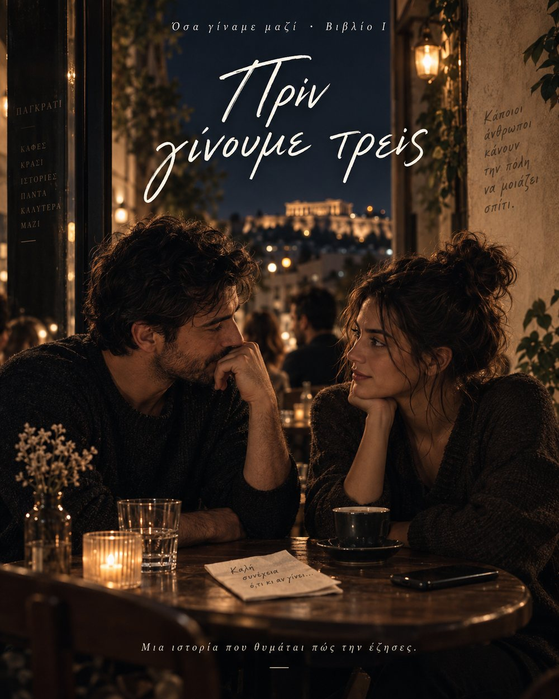

Πριν ξεκινήσεις
Η ιστορία αλλάζει μαζί με τις επιλογές σου.
Διάβασε χωρίς να ψάχνεις τη «σωστή» απάντηση. Σε ορισμένες στιγμές θα αποφασίζεις τι κάνει ο Αλέξανδρος — και η ιστορία θα θυμάται.
1Διάβασε
2Επίλεξε
3Συνέχισε
Δεν υπάρχουν βαθμοί ή σωστές επιλογές. Στο τέλος, αν θέλεις, μπορείς να δεις τον αναστοχαστικό «Καθρέφτη της διαδρομής σου».